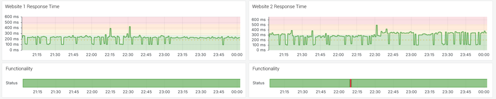
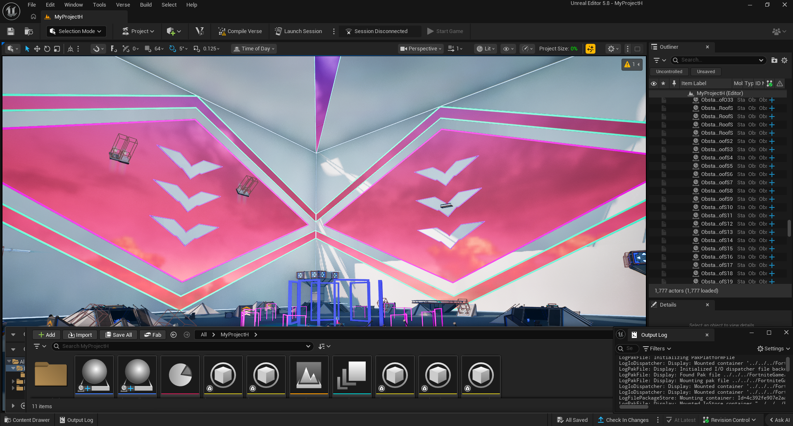

Computer Science Graduate • Cybersecurity Master's Student
I am a Computer Science graduate and Professional Science Master’s student in Cybersecurity at the University of Rhode Island with interests in software engineering, automation, artificial intelligence, and security.
My experience includes building scalable monitoring and automation systems, developing data-driven applications, and working with infrastructure-focused technologies including cloud systems, system reliability tooling, and security workflows.
I enjoy solving technically challenging problems and improving real systems through automation, observability, and efficient engineering practices. I am currently seeking opportunities in software engineering, infrastructure, cybersecurity, and automation-focused roles.

Built a scalable Python-based monitoring system that validates website functionality beyond uptime checks by simulating real user interactions using Selenium.
Integrated Prometheus metrics and Grafana dashboards to track system health, visualize failures, and support real-time observability and alerting.
Designed for reliability testing, automation, and infrastructure validation at scale.
Developed a Python web scraping pipeline that automated data collection from multiple sports sources, enabling scalable structured dataset generation.
Designed an education predictive model using player and game statistics, achieving 83.3% accuracy across 600+ evaluated games.
Full-stack collaborative calendar application enabling users to compare schedules and coordinate availability in real time.
Built with Firebase for authentication, real-time synchronization, and cloud functions.
Designed UI prototypes in Figma and built the front-end using Flutter Flow and Dart, focusing on usability and responsiveness.

Designed and launched a multiplayer game experience using Unreal Engine and Verse scripting, achieving 92,000+ total players.
Software & Infrastructure Support • 2025
Developed automation tools for real-time web service monitoring and validation of university web services.
Applied Python and Selenium-based automation to support system reliability and service stability testing.
Operations & Customer Service • 2020 – 2025
Operated across multiple roles in a fast-paced environment supporting daily operations and customer experience.
Strengthened communication, teamwork, and problem-solving skills while working directly with staff and customers.
Open to opportunities in software engineering, cybersecurity, automation, and infrastructure engineering.
Email: nick_rapoza@uri.edu
LinkedIn: Nick-Rapoza